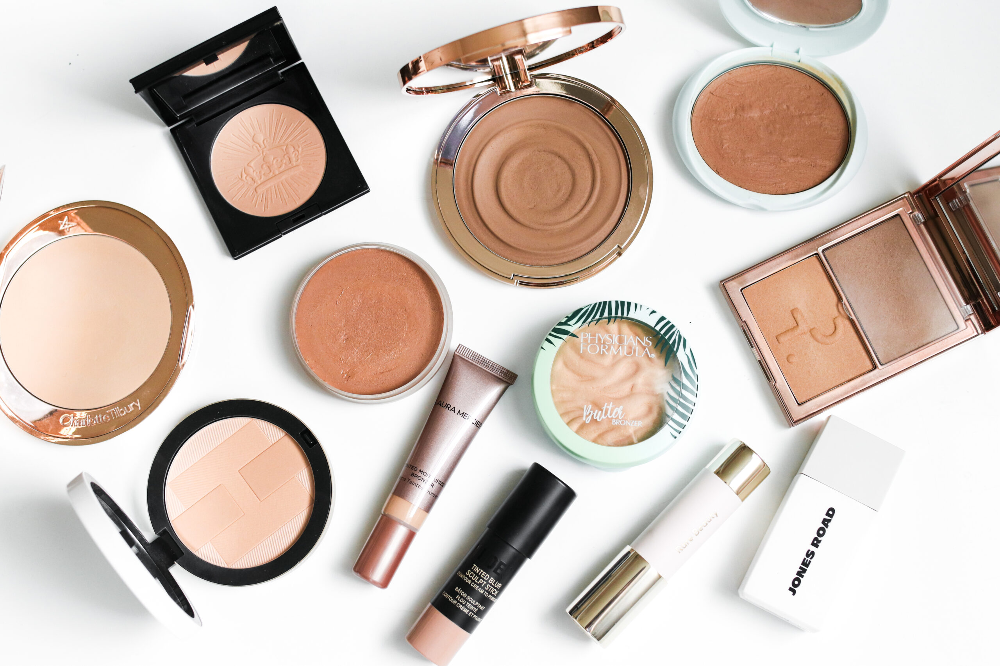

Conceal, Sculpt, and Highlight Your Face With PureMatch Liquid Concealer
It’s that time again, the sun is shining brightly, the days are longer, and the look of sun-kissed skin is in. Summertime is the ideal time to explore the world of bronzers.
There is a misconception that bronzing and contouring are one and the same, this couldn’t be further from the truth. Contouring is meant to bring dimension and depth to the face with subtle sculpting while bronzers are meant to bring warmth and glow.
There is also a distinct difference in the shades of contouring products and bronzers. Because contouring is meant to add depth and dimension the shades often have a noticeably cooler undertone while bronzers have more a skin-like undertone.
Cream vs Powder
With so many options you may find yourself asking should I choose a cream or a powder? Cream bronzers are often a great choice for drier skins because of their emollient nature making it easy to get a softer blend.
However, the new PureBronze collection, despite being a powder, gives a soft touch and blends easily even on a drier skin. It is equally important for oily skins to choose the correct texture for bronzers. Oily skins should avoid choosing bronzers that are heavily shimmered this can cause the skin to look very textured and shiny.
Finding Your Undertone
Just like any other complexion product, both depth of skin and undertone play important roles when choosing a bronzer.
The general rule of thumb is to opt for a bronzer one or two shades darker than your natural skin tone. Whether you are fair, light, medium, deep, or somewhere in between, knowing your skin’s undertone is just as important as knowing your depth of skin.
If you are unsure of your undertone here is a quick review:
Now that we have discussed undertone and depth, application is also an essential element in getting the ultimate natural sun-kissed look. If using in conjunction with complexion products such as foundation make sure to apply a dusting of powder to prevent an uneven application. If a cream bronzeris preferred, it can be blended directly onto the skin after foundation or tinted moisturizer.
Just as contour has specific rules for placement so do bronzers. Applying where the sun naturally hits the face is key. Proper bronzer placementincludes the sides of the forehead, around the temples in a c formation, the tip of the nose and the chin. Fan brushes are the best tool to use, remember this is to add warmth not coverage. A fan brush will keep the application light and natural. Don’t forget about the neck and decollate. For an added glow use a shimmer bronzer on the high points of the face such as the cheekbones and the bridge of the nose.
Bronzers can also be great on the days where you’re not wearing a lot of makeup or taking photos.
Whether you choose cream or powder, bronzers are a great way to welcome in and celebrate summer.
Comments
John Smith: This is a great post! I really enjoyed reading it.
Jan 17, 2024
Jane Doe: Thank you for the insightful information!
Jan 18, 2024
Emily Johnson: I love how you described the content. It's very inspiring.
Jan 19, 2024
Leave a Comment